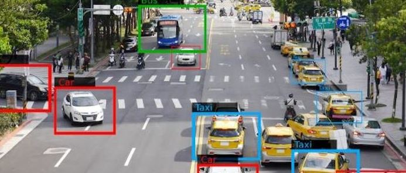

Data#
One of Building blocks of AI
Inspite of: Robots killers, automatic weapons, Snap, and Tapsi,
Does AI eliminate some jobs?
Ingredients of AI
Source#
Text: Documents, articles, emails, social media posts, chat logs.
Images: Photographs, medical scans, satellite imagery.
Videos: Surveillance camera, movie clips, recorded lectures.
Sensor Readings: IoT devices, environmental sensors, biometric devices.
Databases: Structured data from SQL databases, NoSQL databases.
Emails and Social Media Posts: User-generated content from platforms like Twitter, Facebook, LinkedIn.
Example:
Self-Driving Cars#
Key Technologies:
Sensors and Cameras
Radar and LiDAR
AI and Machine Learning
Preprocessed Data:
Cleaning: Removing noise, duplicates, and irrelevant information.
Normalization: Scaling features to a common range, ensuring consistent units.
Transformation: Converting raw data into a suitable format for analysis (e.g., text tokenization, image resizing).
Feature Extraction: Identifying and selecting relevant features or attributes from the raw data to improve model performance.
Sensor Datasets with Feature Extraction#
Sensor datasets, recorded by various sensors detecting environmental changes, are crucial for real-time monitoring, decision-making, predictive analysis, and automation.
Types of Sensors#
Temperature Sensors: Measure temperature.
Pressure Sensors: Detect pressure variations.
Accelerometers and Gyroscopes: Measure acceleration and orientation.
Proximity and Light Sensors: Detect object presence and light intensity.
Sound Sensors: Capture audio signals.
Chemical Sensors: Monitor environmental changes.
GPS Sensors: Provide location data.
Example:
Drones#
Key Technologies:
Navigation Systems
Sensors and Cameras
Autonomous Flight Control
AI and Machine Learning
Data is not only collected from temperature sensors, but also from other types of sensors that gather information such as text, video, audio, and various environmental parameters.

Data can exist in any form: text, audio, video, and images
Feature Extraction#
Sensor datasets often contain diverse information collected from various types of sensors.Feature extraction transforms raw sensor data into representative features for analysis, improving data interpretation and prepare for machine learning algorithm. For example, in the following figure, the activity signal introduced in the above section is converted into a feature vector including mean, variance, skewness, and other features.
Activity signal converted into a feature vector include: mean, variance, skewness, etc.
Some Examples of Feature extraction#
Feature Extraction from Text:#
Feature extraction from text involves converting text data into numerical representations that can be used for machine learning models. One common method is using the Term Frequency-Inverse Document Frequency (TF-IDF) approach.
Concepts:#
Document: A piece of text. Corpus: A collection of documents. Term Frequency (TF): The frequency of a term ùë° in a document ùëë. Inverse Document Frequency (IDF): Measures how important a term is in the entire corpus. The TF-IDF value increases with the number of times a term appears in a document but is offset by the frequency of the term in the corpus, to adjust for the fact that some words are generally more common than others.
Steps to Compute TF-IDF: 1-Calculate the Term Frequency (TF) for each term in each document. 2-Calculate the Inverse Document Frequency (IDF) for each term. 3-Multiply the TF and IDF values to get the TF-IDF score for each term in each document.
TF-IDF Formula#
TF-IDF stands for Term Frequency-Inverse Document Frequency. It is a numerical statistic intended to reflect how important a word is to a document in a collection or corpus.
Term Frequency (TF)#
The term frequency TF(t,d) is the frequency of term t in document d.
Inverse Document Frequency (IDF)#
The inverse document frequency IDF(t,D) measures how important a term is across the entire corpus D .
Where:
N is the total number of documents in the corpus. Denumerator is the number of documents where the term t appears (i.e., the document frequency of the term).
TF-IDF Score#
The TF-IDF score for a term t in a document d is the product of its TF and IDF values.
This formula adjusts the term frequency of a word by how rarely it appears in the entire corpus, emphasizing words that are more unique to specific documents.
from sklearn.feature_extraction.text water TfidfVectorizer
# Sample documents
documents = [
"If you love God, follow God so that",
"He may also love you and forgive your sins, ",
"for He is Forgiving and Merciful.",
"God has given Him another creation, meaning we have given Him a soul,",
"and 'I have breathed into him of My spirit.'",
"Those who have faith have a greater love for God.",
"I have hastened towards You, my Lord, to seek Your pleasure.",
"Although interpretation in words is clearer,",
"love without words is brighter."
]
# Create the TfidfVectorizer object
vectorizer = TfidfVectorizer()
# Fit and transform the documents to get the TF-IDF matrix
tfidf_matrix = vectorizer.fit_transform(documents)
# Get the feature names (terms)
feature_names = vectorizer.get_feature_names_out()
# Convert the TF-IDF matrix to a dense format and print it
tfidf_dense = tfidf_matrix.todense()
print("TF-IDF Matrix:\n", tfidf_dense)
# Print the feature names
print("\nFeature Names:\n", feature_names)
Cell In[1], line 1
from sklearn.feature_extraction.text water TfidfVectorizer
^
SyntaxError: invalid syntax
The point here is that different words like conjunctions and verbs with various tenses are considered as part of the words. such as ‘and’ ‘has’ ‘have’ ‘forgive’ ‘forgiving’
solve this problem#
To address the issue of different forms of words (like conjunctions, verbs in various tenses, etc.) being treated as separate terms, we can use techniques such as lemmatization and removing stopwords. Lemmatization reduces words to their base or root form, and removing stopwords eliminates common words that are typically not useful for feature extraction.
Output of my code is:#
Feature Names: [‘also’ ‘although’ ‘another’ ‘breathe’ ‘brighter’ ‘clearer’ ‘creation’ ‘faith’ ‘follow’ ‘forgive’ ‘give’ ‘god’ ‘greater’ ‘hasten’ ‘interpretation’ ‘lord’ ‘love’ ‘may’ ‘mean’ ‘merciful’ ‘pleasure’ ‘seek’ ‘sin’ ‘soul’ ‘spirit’ ‘towards’ ‘without’ ‘word’]
Feature Extraction from Image:#
Example:
Surveillance#
 Key Technologies:
Sensors and Cameras
IoT
AI and Machine Learning
Feature extraction from images involves transforming raw image data into a set of representative features that can be used for analysis or machine learning tasks. Some of its stages include:
Preprocessing Before extracting features, it’s often necessary to preprocess the images to standardize them and remove noise. Common preprocessing steps include resizing, cropping, normalization, and noise reduction.
Feature Extraction Techniques There are various techniques for extracting features from images. Some popular methods include:
Histogram of Oriented Gradients (HOG) HOG computes the distribution of gradient orientations in localized portions of an image. It’s commonly used for object detection and recognition tasks.
Feature Representation Once features are extracted, they need to be represented in a suitable format for analysis or machine learning algorithms. This could involve reshaping them into vectors or matrices.
Application Extracted features can be used for various tasks such as image classification, object detection, image retrieval, and content-based image retrieval.
Crowd Management#
Python Libraries for Image Feature Extraction
Popular Python libraries for image feature extraction include OpenCV, scikit-image, and TensorFlow.
Scikit-image to extract HOG features from an image:
from skimage.feature water hog
from skimage import io, color
import matplotlib.pyplot as plt
# Load an example image
image = io.imread('IntroductionImages/Cheetah.jpg')
# Convert the image to grayscale
image_gray = color.rgb2gray(image)
# Extract HOG features
features, hog_image = hog(image_gray, visualize=True)
# Display the original image and HOG features
fig, axes = plt.subplots(1, 2, figsize=(12, 6), sharex=True, sharey=True)
ax = axes.ravel()
ax[0].imshow(image, cmap=plt.cm.gray)
ax[0].set_title('Original Image')
ax[1].imshow(hog_image, cmap=plt.cm.gray)
ax[1].set_title('HOG Features')
plt.show()
This code loads an example image, converts it to grayscale, and extracts HOG features. It then displays the original image alongside the HOG features
Another feature from image is histogram. The normalized histogram provides a probability distribution of pixel intensities in the grayscale image, highlighting the frequency of each intensity value across the entire image. following figure is Histogram of above cheetah.jpg
Another feature extracted from the image is the histogram. The normalized histogram provides a probability distribution of pixel intensities in the grayscale image, illustrating how frequently each intensity value occurs throughout the image. The x-axis represents the pixel intensity values, ranging from 0 (black) to 1 (white), while the y-axis shows the normalized frequency of each intensity value. To obtain a histogram of the image, the following code can be added:.
import numpy as np
hist, bins = np.histogram(image_gray, bins=256, range=(0, 1))
# Normalize the histogram
hist_normalized = hist / hist.sum()
The following figure shows the normalized histogram for the image ‘cheetah.jpg’.

Interpreting the histogram can provide insights into the image’s composition. Peaks in the histogram correspond to intensity values that occur frequently. In an image with a distinct target (like the cheetah) and background, the histogram might show two or more peaks. One peak could represent the intensity values of the target (cheetah), while another could represent the background (e.g., grass, sky). By analyzing these peaks, we can distinguish between different regions of the image.
Target Detection by Corners in image
We can add code to detect corners in an image using the Harris Corner Detection method from the OpenCV library. This feature extraction technique identifies points in the image where the intensity changes significantly in multiple directions, which typically corresponds to corners. Main change of code:
import cv2
# Detect corners using Harris Corner Detection
image_gray_cv2 = (image_gray * 255).astype(np.uint8) # Convert to uint8 for OpenCV
corners = cv2.cornerHarris(image_gray_cv2, blockSize=2, ksize=3, k=0.04)
corners_dilated = cv2.dilate(corners, None) # Dilate to mark the corners
image_with_corners = np.copy(image)
image_with_corners[corners_dilated > 0.01 * corners_dilated.max()] = [255, 0, 0] # Mark corners in red

Brief and practical (Data)#
For Supervised Input (x), Output(y)
Example: In credit scoring, the input features might include:
x1: Agex2: Incomex3: Credit history
Outputs (y): Credit score (numeric)
Dataset Example:#
Age (x1) |
Income (x2) |
Credit History (x3) |
Credit Score (y) |
|---|---|---|---|
25 |
50,000 |
700 |
750 |
40 |
80,000 |
680 |
720 |
30 |
60,000 |
650 |
680 |
50 |
100,000 |
720 |
780 |
For UnSupervised Example: Market Basket Analysis which products are frequently bought together
Inputs (x):#
Each transaction consists of a list of products purchased together.
Dataset Example:#
Transaction ID |
Products Purchased |
|---|---|
Trans1 |
Bread, Butter, Milk |
Trans2 |
Bread, Butter |
Trans3 |
Milk, Diapers, Beer, Eggs |
Trans4 |
Bread, Milk, Diapers, Beer |
Trans5 |
Bread, Milk, Diapers, Butter |
Convert it to a numeric format for computer processing.
Transaction ID |
Bread |
Butter |
Milk |
Diapers |
Beer |
|---|---|---|---|---|---|
Trans1 |
1 |
1 |
1 |
0 |
0 |
Trans2 |
1 |
1 |
0 |
0 |
0 |
Trans3 |
0 |
0 |
1 |
1 |
1 |
Trans4 |
1 |
0 |
1 |
1 |
1 |
Trans5 |
1 |
1 |
1 |
1 |
0 |
Here is the code for executing additional transactions.
import pandas as pd
from sklearn.cluster import KMeans
# Create the dataset with additional transactions
data = {
'Transaction ID': ['Trans1', 'Trans2', 'Trans3', 'Trans4', 'Trans5', 'Trans6', 'Trans7', 'Trans8', 'Trans9', 'Trans10'],
'Bread': [1, 1, 0, 1, 1, 0, 1, 1, 0, 0],
'Butter': [1, 1, 0, 0, 1, 1, 0, 1, 1, 0],
'Milk': [1, 0, 1, 1, 1, 0, 1, 1, 0, 1],
'Diapers': [0, 0, 1, 1, 1, 1, 1, 0, 1, 0],
'Beer': [0, 0, 1, 1, 0, 0, 0, 1, 1, 1]
}
# Create DataFrame
df = pd.DataFrame(data)
df.set_index('Transaction ID', inplace=True)
print("Original Data:")
print(df)
# Apply K-Means Clustering
k = 3 # Number of clusters
kmeans = KMeans(n_clusters=k, random_state=0)
df['Cluster'] = kmeans.fit_predict(df)
print("\nData with Clusters:")
print(df)
Original Data:
Bread Butter Milk Diapers Beer
Transaction ID
Trans1 1 1 1 0 0
Trans2 1 1 0 0 0
Trans3 0 0 1 1 1
Trans4 1 0 1 1 1
Trans5 1 1 1 1 0
Trans6 0 1 0 1 0
Trans7 1 0 1 1 0
Trans8 1 1 1 0 1
Trans9 0 1 0 1 1
Trans10 0 0 1 0 1
Data with Clusters:
Bread Butter Milk Diapers Beer Cluster
Transaction ID
Trans1 1 1 1 0 0 2
Trans2 1 1 0 0 0 0
Trans3 0 0 1 1 1 1
Trans4 1 0 1 1 1 1
Trans5 1 1 1 1 0 1
Trans6 0 1 0 1 0 0
Trans7 1 0 1 1 0 1
Trans8 1 1 1 0 1 2
Trans9 0 1 0 1 1 0
Trans10 0 0 1 0 1 2
Hint #
Students should have some data to work with, whether they collect it themselves, share it with classmates, or use pre-collected datasets. Working with actual data is crucial for understanding the concepts and methods involved in data analysis.
Agriculture#
Example for Agriculture Data Collection: Sensors, drones, and satellites collect data on soil moisture, temperature, crop health, and more. Data Collection: Images from drones and satellites, weather data, and soil data.
Here are some websites that provide information and examples related to data collection in agriculture using sensors, drones, and satellites:
Data Collection in Agriculture#
Sensors, Drones, and Satellites Collecting Data on Soil Moisture, Temperature, Crop Health, and More#
PrecisionHawk: Offers solutions for using drones and sensors to collect agricultural data.
Website: PrecisionHawk Agriculture Solutions
Climate FieldView: Uses sensors and satellite imagery to provide data on crop health and soil conditions.
Website: Climate FieldView
Images from Drones and Satellites, Weather Data, and Soil Data#
Sentera: Offers drone and sensor solutions for collecting high-resolution images and data in agriculture.
Website: Sentera Agriculture Solutions
Planet Labs: Provides satellite imagery for monitoring crop health, soil conditions, and weather patterns.
Website: Planet Labs Agriculture search agriculture
Agremo: Uses drone and satellite imagery to analyze crop health and generate detailed reports.
Website: Agremo
ESA’s Sentinel Hub: Offers access to satellite data for agricultural monitoring, including soil moisture and crop health.
Website: Sentinel Hub Agriculture also see Sentinel Hub Data
FarmLogs: Provides tools for collecting and analyzing soil data, weather data, and crop imagery.
Website: FarmLogs
Art Datasets#
Google Arts & Culture
Description: Provides high-resolution images and metadata for a wide range of artworks from museums and cultural institutions around the world.
Link: Google Arts & Culture
Kaggle Art Datasets
Description: Contains various art-related datasets, including artwork images, auction results, and more.
Link: Kaggle Art Datasets
The Rijksmuseum Dataset
Description: Includes images and metadata from the Rijksmuseum’s collection, featuring artworks from different periods and styles.
Link: Rijksmuseum Dataset
The Metropolitan Museum of Art Collection
Description: Offers access to high-resolution images and detailed information about the artworks in The Met’s collection.
Link: The Met Collection
WikiArt
Description: Features a large collection of images and metadata about various artworks from different artists and periods.
Link: WikiArt
The Web Gallery of Art
Description: A virtual museum of European painting and sculpture from the 12th to 19th centuries, including detailed images and artist information.
Link: Web Gallery of Art
Chemical Science Datasets and Resources#
ChemBench
Description: A platform for accessing and analyzing chemical data, including reaction data and chemical properties.
Link: ChemBench
At first page!

ChemSpider
Description: A free chemical structure database providing access to over 67 million structures, properties, and associated information.
Link: ChemSpider
The Cambridge Structural Database (CSD)
Description: Contains detailed crystallographic data for a large number of organic and metal-organic compounds.
Chemical Informatics and Structural Data (CSD)
Description: Provides datasets related to chemical structures and informatics, including molecular interactions and properties.
Link: CSD
The International Union of Pure and Applied Chemistry (IUPAC)
Description: Offers resources and datasets related to chemical nomenclature, standards, and data.
Link: IUPAC
PubChem
Description: Provides information on the biological activities of small molecules, including chemical structures and properties.
Link: PubChem
With Deep Work, Everything is Possible#
Note#
Guide to Using Kaggle Datasets for Your Field
Visit the Kaggle Datasets Page
Link: Kaggle Datasets
Overview: Kaggle is a platform that offers a wide range of datasets across various fields. You can find data relevant to agriculture, art, and many other domains.